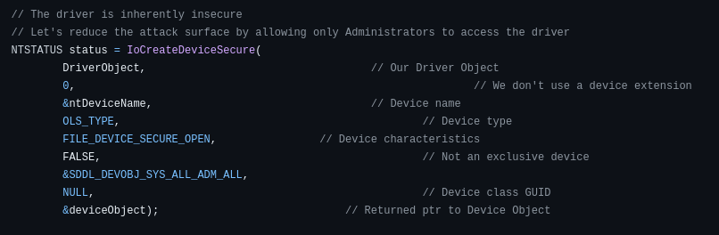
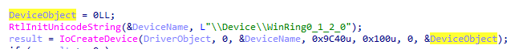
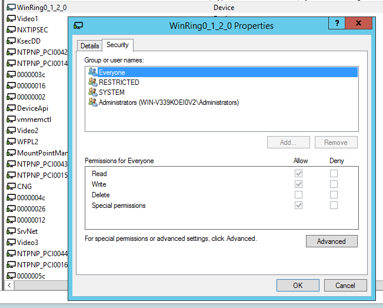
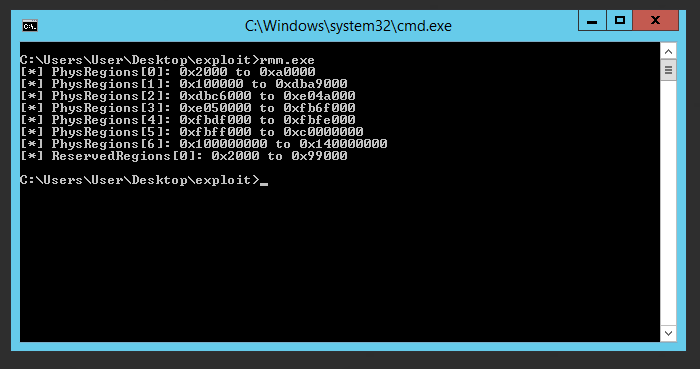
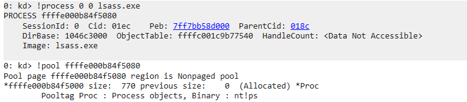
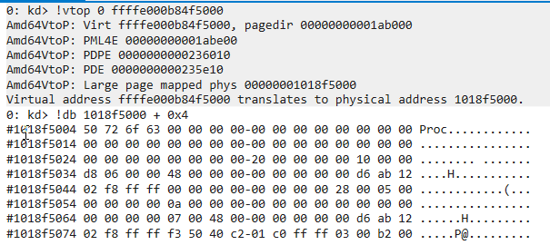
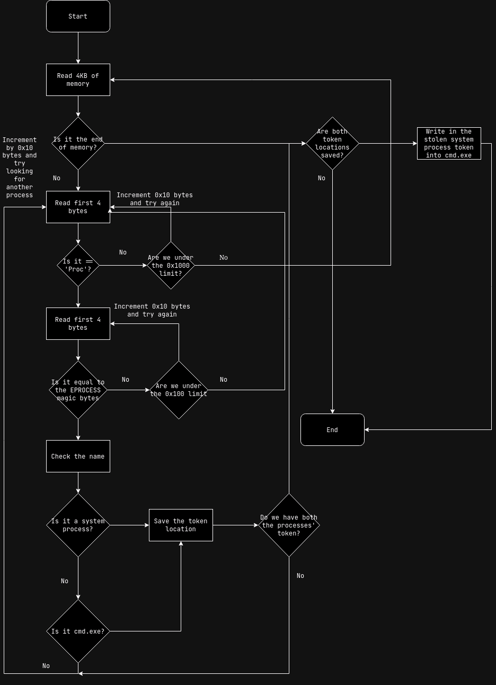

At the start of this year, I stumbled across this weird driver. I decided to throw it into IDA and found out that it is WinRing0 which any limited user can access. The best (worst?) part? It was signed and it can still be loaded. I decided to play around with it.
From the github repo.
WinRing0 is a hardware access library for Windows.
WinRing0 library allows x86/x64 Windows applications to access
-> I/O port
-> MSR (Model-Specific Register)
-> PCI
Such drivers are popularly used among tools for overclocking tools for CPUs/GPUs, hardware control for things such as RGB on the motherboard/RAM, and tools that provide information about the system such as voltages, temperatures, etc. Digging into the code, I also found out that it allows access to reading and writing to the system's physical memory.
The code does
make use of IoCreateDeviceSecure which is good since such a driver
should be used only by Administrators (I digress despite being
Administrator only bypassing the OS' security mechanism should not be
allowed at all).

Driver source showing it uses IoCreateDeviceSecure
However, the version I have does NOT make use of IoCreateDeviceSecure
but rather IoCreateDevice which means even limited users can access this driver!

Ida disassembly showing the driver uses IoCreateDevice

WinObj showing the access permissions of the driver
Initially I thought one could read the CR3 register (on x86_64 this holds the physical address for the PML4 base) and manually find the physical addresses for certain important variables.
However, this driver does not provide any access to any CR registers so, we have to go with the second approach which is scanning the entire memory manually. In order to scan the memory, we need to know which memory regions are valid and can be scanned. Fortunately, Windows provides a registry key just for providing this information!
Windows provides a registry key
HKEY_LOCAL_MACHINE\HARDWARE\RESOURCEMAP\System Resources\Physical
Memory which contains the physical memory map of the system. It also
provides reserved memory regions. These reserved regions are usually
used for hardware MMIO. We would not like to touch these regions so we
would skip over these regions. The funny thing is this registry key is
accessible to limited users as well. I wrote a basic program to print
out the memory map and used this in the exploit.

Memory map dump of the system
I decided to look for the EPROCESS structures of a system process and
for the cmd.exe process. The EPROCESS structure contains various
information about the running process such as the name, creation time,
etc. We are interested in the token. A token specifies the security
context of the running thread or process, so, if we steal a system
process' token (let's say lsass.exe) and apply it to our process
(cmd.exe) then the process would have the security context of a system
process. We escalated the privileges. How do we look for the EPROCESS
structure in memory though?
In Windows, memory allocations in the kernel are made using the
ExAllocatePool family of functions. The pool address returned is 16
bytes aligned. These functions require a tag for the allocation. The
tag is a 4 byte character associated with the pool. Pool allocations
made for EPROCESS are done using the 'Proc' tag. So we can first start
by scanning the memory for 'Proc'.


However that is not enough to find EPROCESS structures in memory since
any random memory chunk can have 'Proc' but that does not make it an
actual pool. So, we need to check for other defining bytes which
proves it is a valid pool containing the EPROCESS structure.
Thankfully I came across this where it mentioned
a few magic bytes to be checked which also marked the start of the
actual EPROCESS structure. In this case the bytes were \x03\x00\xb2\x00.
After checking the magic bytes, we can check if the name corresponds to a system process such as lsass.exe, smss.exe, etc. or if its cmd.exe. When we find either of these, we save the token's location in physical memory. When we finally find both a system process and cmd.exe's token locations, we break out of the loop. We copy the token from the system process and finally write it into the cmd.exe

Flow chart of how the entire exploit works
Here is a demo of the exploit running on a Windows Server 2012 R2 virtual machine with secure boot enabled to prove that indeed the driver is signed and loaded by the system. The final exploit can be found here
In NT 10 there have been more restrictions imposed on what ranges can
be and can not be mapped. There is also the introduction of
MiShowBadMapper which prevents such "scanning" of memory from taking
place. There are probably techniques which allow one to bypass these
and scan the entire system memory but since I was busy and had other
work to do so I decided to spin up a Windows Server 2012 R2 virtual
machine, update it and do all the testing under that. My main goal was to show
that the driver exposed such interfaces which allows for these
exploits.
Even if you find a signed driver, it doesn't mean the driver is going to be safe. There have been cases of such drivers being signed and shipped in products. I believe there should be stricter processes on how these drivers are signed. Microsoft should also revoke signatures for drivers for products that are no longer in development. This minimizes the number of exploited drivers or crashes caused due to silly issues such as the CrowdStrike incident. This driver was included with EVGA's Precision XOC software which is no longer in development but the driver included is still signed and valid.